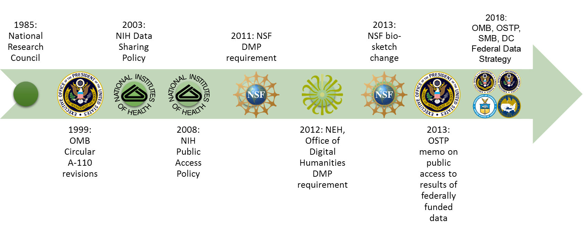
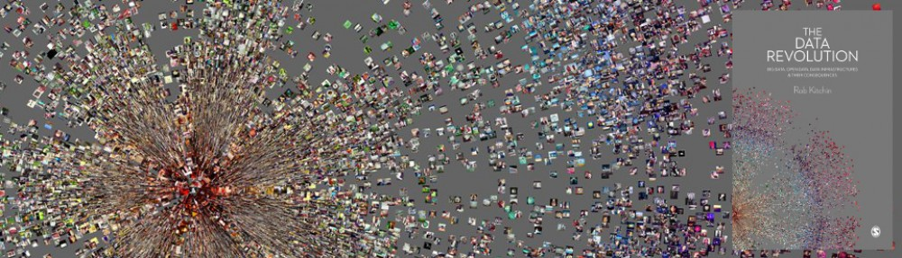

DATA CURATION NETWORK
Data Curation Workshop
Timothy Norris - tnorris@miami.edu
James Sobczac - jsobczak@miami.edu
Cameron Riopelle - criopelle@miami.edu
University of Miami Libraries - July 2 2019
James Sobczac - jsobczak@miami.edu
Cameron Riopelle - criopelle@miami.edu
University of Miami Libraries - July 2 2019
Learning Outcomes
- Increase understanding of data curation practices and tools in various disciplines, data types, and formats.
- Share expertise and enhance curation capacity for librarians at the University of Miami.
- Meet like-minded colleagues who are interested in building and extending curation practices at UM.

Research data have value beyond their original purpose, but…
- There is a lot of data.
- Data can be messy and incomprehensible (lack context!)
- Digital file formats are constantly at risk
- Most data never leaves their author’s laptop ⇒ benign neglect
Incentives for sharing data strengthen the need for better curation
- Funding mandates
- Publisher data sharing policies (PLoS and Nature)
- Reproducibility => standardized practices around data pipelines and replication studies
- Retraction Watch (stick) and Open Data movement (carrot) helps safeguard against scientific fraud or the dissemination of erroneous results
What is data curation?
“The encompassing work and actions taken by curators of a data repository in order to provide meaningful and enduring access to data.”
Data Curation Network: Data Curation Terms & Activities. http://hdl.handle.net/11299/188638
Remember… data curation is just one piece of the broader data services landscape

Kouper, I., Fear, K., Ishida, M., Kollen, CC., and Williams, S. (2017). Research Data Services Maturity in Academic Libraries. In Curating Research Data: Practical Strategies for Your Digital Repository. Ed. Lisa R. Johnston. Chicago: Association of College and Research Libraries: pp 153-170.
UM Data Curation Initiative
The UM Data Curation Initiative
Libraries
Office of Research
Information Technology
Center For Computational Science
Office of Research
Information Technology
Center For Computational Science
}
Conversation started in 2009
CLIR postdoctoral Fellow 2014-16
Emerging e-science at UM
CLIR postdoctoral Fellow 2014-16
Emerging e-science at UM
/
Environmental Scan
Environmental Scan
\
Pilot Projects
Recommendations
Pilot Projects
Recommendations
UM Data Curation Initiative
Federal Movement Towards Open Data

Adapted from: Whitmire, Amanda L. (2014). Research Data Management Curriculum, Lecture 2: Introduction to Research Data Management. Oregon State University Libraries. http://figshare.com/articles/GRAD521_Research_Data_Management_Lectures/1003835
UM Environmental Scan
UM Environmental Scan (2015)
- Key Observations
- Data as research input and output
- Big Data are the exception
- Long-term curation is lacking
- Human resources are a limiting factor
- Data management crosses personal and professional boundaries
- There is a desire to share, but current frameworks are not working
- Key Takeaways
- UM lacks data norms and guidelines
- UM is neither leading nor behind peer institutions
- Rescue the future: teach good data management habits
- Data curation is a social problem, not technical
Norris, T. and S. Shreeves (2017). University of Miami Data Curation Initiative: Report and Recommendations. University of Miami Libraries.
UM Environmental Scan
!?
Tangible Actions
Data Curation Network - Mnemonic for Curation
CCheck files and read documentation (risk mitigation, file inventory, appraisal/selection)
UUnderstand the data, or try to ... (run files/environment, QA/QC issues, readmes)
RRequest missing information or changes (tracking provenance of processes and changes)
AAugment metadata for findability (DOIs, metadata standards, discoverability)
TTransform file formats for reuse (data preservation, conversion tools, data viz)
EEvaluate for FAIRness (licenses, responsibility standarads, metrics for tracking)
DDocument the curation process
UUnderstand the data, or try to ... (run files/environment, QA/QC issues, readmes)
RRequest missing information or changes (tracking provenance of processes and changes)
AAugment metadata for findability (DOIs, metadata standards, discoverability)
TTransform file formats for reuse (data preservation, conversion tools, data viz)
EEvaluate for FAIRness (licenses, responsibility standarads, metrics for tracking)
DDocument the curation process
Data Curation Network (2018). "Checklist of CURATED Steps Performed by the Data Curation Network." https://datacurationnetowrk.org
Tangible Actions
A
Augment Data
DOIs(Digital Object Identifiers)
Metadata Standards
Discoverability
Metadata Standards
Discoverability

Tangible Actions
FAIR Data
FFindable rich metadata with assigned DOI
AAccessible Metadata and data available across open protocols
IInteroperable Data and metadata represented with standard or easily understood data structures
RReusable metadata includes provenance and uses community accepted descriptions
AAccessible Metadata and data available across open protocols
IInteroperable Data and metadata represented with standard or easily understood data structures
RReusable metadata includes provenance and uses community accepted descriptions
Wilkinson, M. D., M. Dumontier, I. J. Aalbersberg, G. Appleton, M. Axton, A. Baak, N. Blomberg, J.-W. Boiten, L. B. da Silva Santos, P. E. Bourne, J. Bouwman, A. J. Brookes, T. Clark, M. Crosas, I. Dillo, O. Dumon, S. Edmunds, C. T. Evelo, R. Finkers, A. Gonzalez-Beltran, A. J. G. Gray, P. Groth, C. Goble, J. S. Grethe, J. Heringa, P. A. C. ’t Hoen, R. Hooft, T. Kuhn, R. Kok, J. Kok, S. J. Lusher, M. E. Martone, A. Mons, A. L. Packer, B. Persson, P. Rocca-Serra, M. Roos, R. van Schaik, S.-A. Sansone, E. Schultes, T. Sengstag, T. Slater, G. Strawn, M. A. Swertz, M. Thompson, J. van der Lei, E. van Mulligen, J. Velterop, A. Waagmeester, P. Wittenburg, K. Wolstencroft, J. Zhao and B. Mons (2016). The FAIR Guiding Principles for scientific data management and stewardship. Scientific Data, 3, 160018. doi: 10.1038/sdata.2016.18.
Data Science and the Way Forward
"It is an unfortunate accident of history that the term datum ... rather than captum ... should have come to symbolize the unit-phenomenon in science. For science deals, not with 'that which has been given' by nature to the scientist, but with 'that which has been taken' or selected from nature by the scientist in accordance with his [sic] purpose." (Kitchin 2014, p. 2)

Cited in Kitchin, R. (2014). The Data Revolution. Washington DC: SAGE from Jensen. H.E. (1950). 'Editorial Note' in H. Becker (1952). Through Values to Social Interpretation. Duke University Press, Durham, pp. ix.
Thanks!